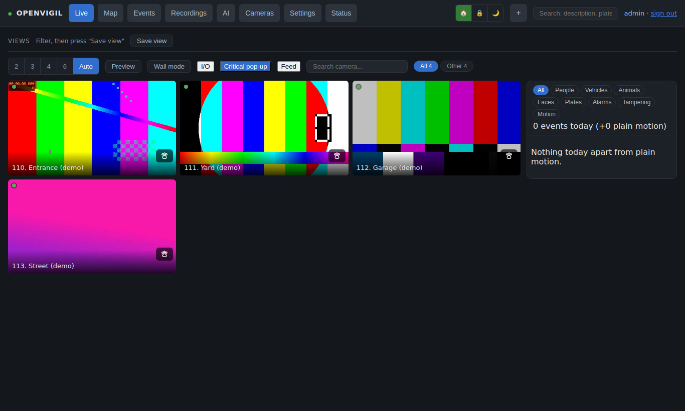
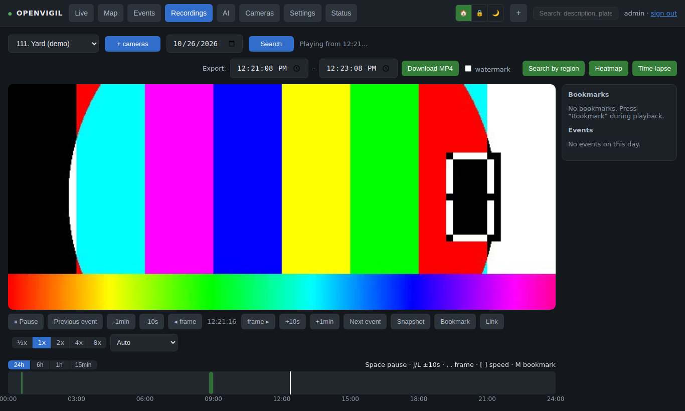
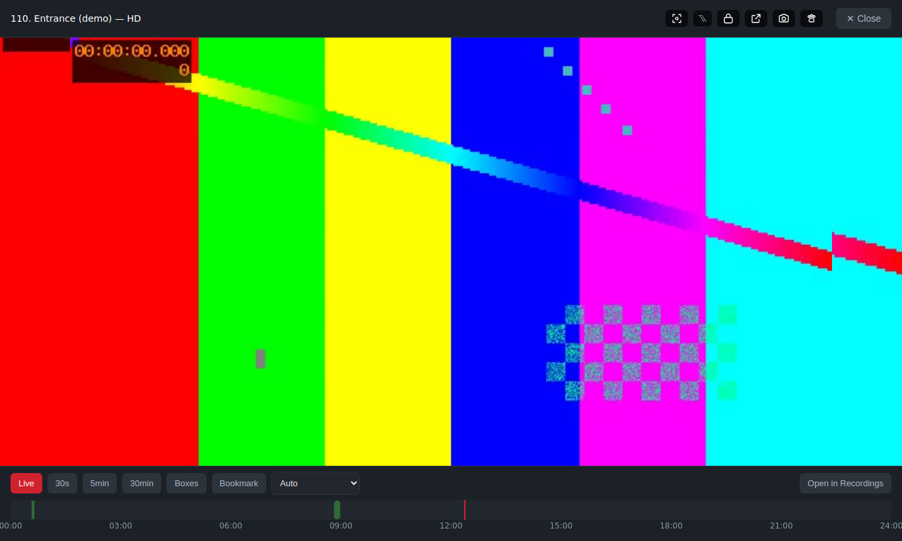
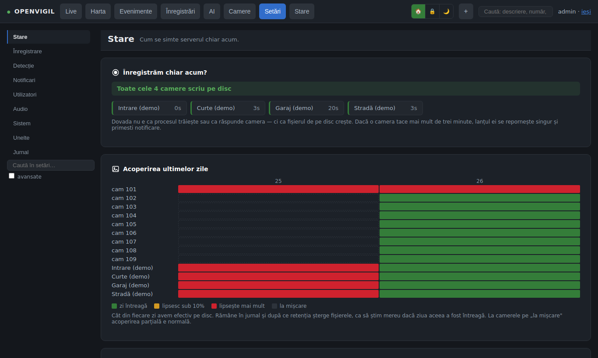
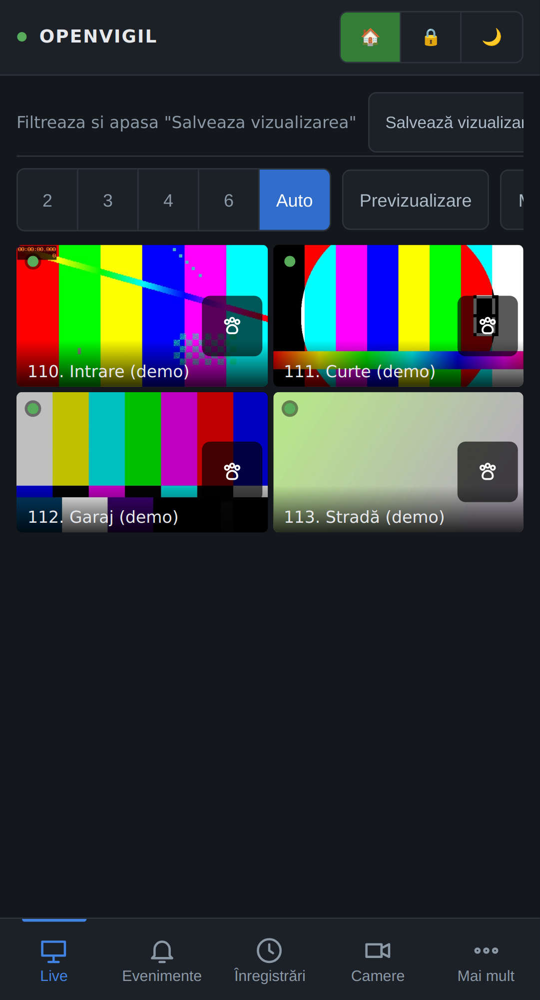
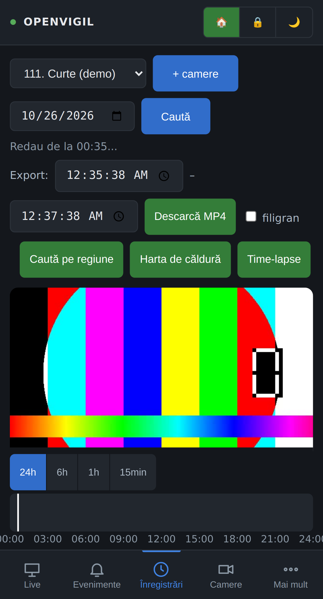
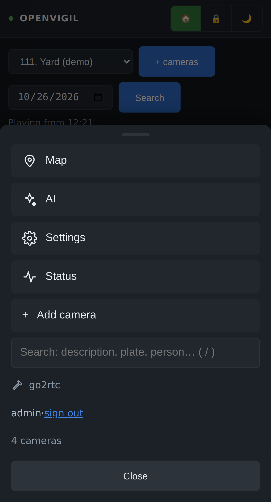

OpenVigil
Self-hosted NVR for IP cameras, with AI that stays in your house.
OpenVigil records every camera continuously on your own disk, streams live to the browser through go2rtc, and runs detection, face recognition, re-identification and natural-language descriptions on your own GPU. No cloud, no subscription, no phone-home. Hikvision first, ONVIF second.
git clone https://github.com/sm26449/openvigil.git /opt/openvigil
cd /opt/openvigil
sudo ./install.shOne script: Docker, the NVIDIA container toolkit if you have a GPU, a .env with your time zone and ports, build, start. Then open http://<server>:8079, create the first account and add cameras.
Records everything
5‑minute MP4 segments per camera, retention by days and free space, motion‑only mode, SHA‑256 chain of custody for evidence.
Live and playback
MSE/WebRTC live with two‑way audio, zoomable timeline, 0.5–8× speed on GPU, exports with boxes, time‑lapse, heatmaps.
Local AI
YOLO11 detection with fine‑tuning on your own frames, InsightFace faces, OSNet re‑ID, plates, Qwen2.5‑VL descriptions, SigLIP semantic search.
Operations
Home/away/night modes with rules, Telegram alerts and daily digest, Web Push, MQTT and webhooks, map view, siren/strobe/talk on supported cameras.
Accounts and safety
Admin and per‑camera viewers, 2FA, revocable sessions, CSRF, strict CSP, audit log; go2rtc never listens on the LAN.
Honest about its origin
Built for one real installation (18 cameras, an RTX 2000 Ada) and published as is. UI in English and Romanian, other languages are a JSON file away. AGPL‑3.0; model licences in NOTICE.md.
Why OpenVigil
- Your cameras, your disk, your GPU. Nothing leaves the house: no cloud account, no subscription, no licence per camera, no phone‑home. Remote access is whatever reverse proxy you already trust.
- It works with the cameras you have. Hikvision over ISAPI (siren, strobe, talk, PTZ and the camera's own settings from the same page) and anything that speaks ONVIF/RTSP. Adding a camera is a network scan and a click, not a config file.
- AI that goes past “a person was detected”. Who it was (faces), the same person across cameras even without a face (re‑ID), what happened in words (descriptions you can search), licence plates known/unknown, and a detector you fine‑tune on your own frames from the interface.
- Built for evidence, not just viewing. Every segment has a SHA‑256 in a chain of custody, every export is registered and verifiable on a public page without an account, and incidents go into case files you hand over as a ZIP.
- A complete system in one install. Modes with rules, Telegram alerts and a daily digest, Web Push, MQTT and webhooks, accounts with per‑camera roles and 2FA, audit log, self‑healing recorders, nightly encrypted backups. One Docker stack, one script.
- Honest about what it is. Written for one real installation and published as is: it wants an NVIDIA GPU for the heavy models, it has one active author, and it will have rough edges on hardware it has not seen. Everything in
data/is plain files and SQLite, so you are never locked in.
Screenshots
Taken on the built-in demo mode (synthetic cameras): no real footage, nobody's house.







What you need
A Linux box with Docker, disk for recordings (about 1 GB per camera per hour at 4 MP H.265), cameras on a LAN the box can reach, and, for the AI features, an NVIDIA GPU. Without a GPU you still get recording, live view and CPU detection.
Română
OpenVigil e un NVR auto‑găzduit: înregistrează totul local, rulează AI pe placa ta video și nu vorbește cu niciun cloud. Instalarea e o singură comandă; manualul complet, în română, e în docs/ro/manual.md.